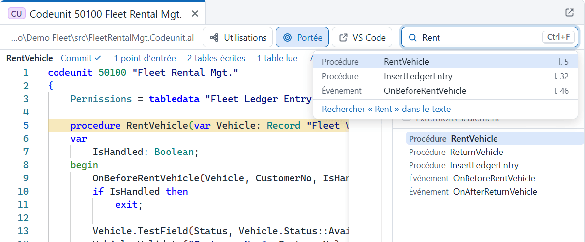
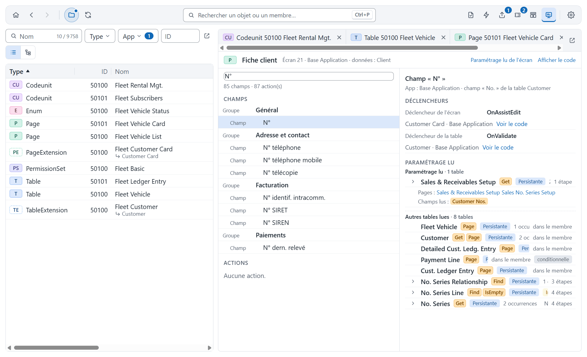
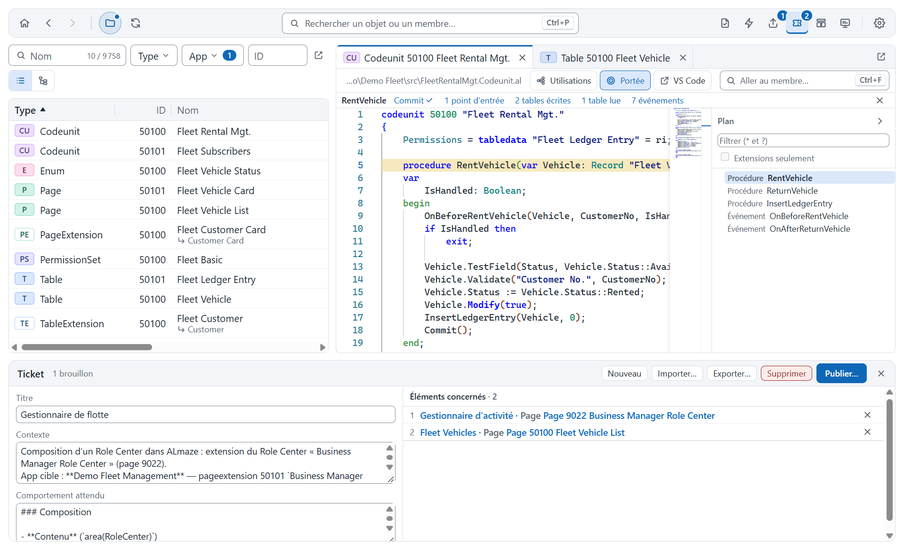
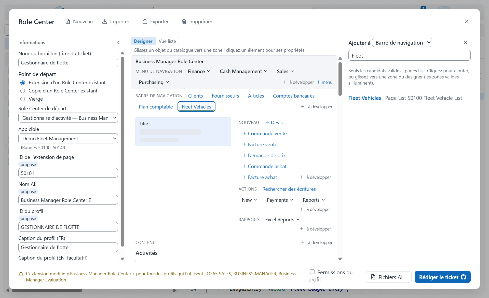
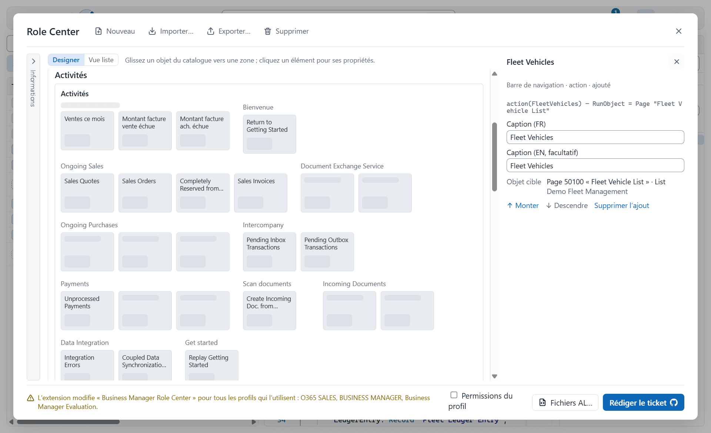

ALmaze
Votre chemin dans le code Business Central
Manuel utilisateur · version 1.3.0Présentation
ALmaze est un explorateur du code AL de Microsoft Dynamics 365 Business Central. Il ouvre en lecture seule un projet, un fichier .code-workspace ou un dossier de packages, avec les applications Microsoft dont il dépend, et permet de retrouver en quelques secondes ce que l’on cherche d’habitude à la main dans VS Code ou dans les sources de la Base Application.
Il répond aux questions du quotidien :
- Où est utilisé cet objet, ce champ, cette procédure ? Qui écrit dans ce champ ?
- Qui appelle cette procédure, et que fait-elle à son tour (hiérarchie d’appels) ?
- Jusqu’où va un membre : tables écrites et lues, commits, événements levés, points d’entrée (portée) ?
- Quels abonnés réagissent à un événement, quelles opérations (Insert, Modify, Delete…) touchent une table ?
- Quel jeu de permissions faut-il pour exécuter une fonctionnalité ?
- Comment décrire une demande au développeur avec les bonnes références ? Un ticket GitHub rédigé dans ALmaze.
- Que voit le consultant à l’écran, et quel paramétrage lit ce champ ? La Vue fonctionnelle.
- À quoi ressemblera ce Role Center, et quelles permissions demande son profil ? L’éditeur de Role Center.
ALmaze ne modifie jamais le code : il le lit, l’indexe et l’affiche ; il peut publier des tickets GitHub, sans rien écrire dans les dépôts. Il fonctionne hors ligne une fois les dépendances téléchargées.
Nouveautés de la version 1.3
La version 1.3 refond l’interface, sans changer ce qu’elle permet de faire :
- En-tête d’objet compact : les actions de l’objet tiennent sur une ligne, en icônes quand la place manque, le surplus dans un menu … ; une seule recherche de membres, Ctrl+F (voir Lire le code).
- Panneaux du bas : même en-tête partout (titre, compteur, Exporter…, Détacher, Fermer), onglets intégrés, filtres Inclure : et choix Apps du corpus / Toutes les apps.
- Dialogues homogènes : croix en haut à droite, Échap ou un clic à côté pour fermer, focus gardé dans le dialogue.
- Notifications empilées en bas à droite : indexation, échec de l’ouverture dans VS Code, mise à jour disponible.
- Diagrammes lisibles à l’ouverture, libellés des liens au survol, bouton Ajuster pour la vue d’ensemble.
- Thème Sombre (anciennement « Dark mode »), contrastes renforcés dans les trois thèmes, icônes uniformes.
- Événements : la colonne Levé par (anciennement « Publisher ») ; « corpus » remplace « workspace » dans les libellés.
Les versions 1.1 et 1.2 ont apporté la Vue fonctionnelle et le paramétrage lu d’un champ, les brouillons de ticket publiés sur GitHub, l’éditeur de Role Center avec son designer et les permissions du profil, les utilisations d’un Label, le survol des textes traduisibles et les langues de traduction. L’export des permissions regroupe désormais un objet présent plusieurs fois en une seule entrée.
Installation et mises à jour
Télécharger le dernier installeur ALmaze_<version>_x64-setup.exe depuis la page des Releases, puis le lancer. L’installation se fait par utilisateur, dans %LOCALAPPDATA%\ALmaze, sans droits administrateur.
Prérequis : Windows 10 ou 11 x64. Le runtime WebView2, déjà présent sur Windows 11, est téléchargé par l’installeur s’il manque.
Mises à jour. À chaque lancement, ALmaze vérifie s’il existe une version plus récente et la propose dans une notification en bas à droite de la fenêtre : Installer et redémarrer ou Plus tard. La recherche au lancement se désactive dans Paramètres › Mises à jour, qui permet aussi de chercher à la demande.
Ouvrir un corpus
Un corpus est l’ensemble des applications ouvertes ensemble. L’écran d’accueil propose trois façons de l’ouvrir :
| Choix | Ce qui est chargé |
|---|---|
| Fichier .code-workspace | Tous les dossiers listés dans le fichier : projets AL et leurs dossiers .alpackages. |
| Dossier de projet | Un dossier contenant un app.json et ses sources .al. |
| Dossier de packages | Des fichiers .app, avec ou sans sources. |
Le dossier est parcouru récursivement. Chaque application est représentée par ses sources si on les a, sinon par son package de version la plus haute.

Les récents se rouvrent d’un clic. Sous la liste, la section GitHub permet de se connecter (code à saisir sur github.com, ou jeton personnel) puis d’ouvrir directement un dépôt à une branche ou un tag : il est téléchargé dans un cache local, sans clone.
À l’ouverture, ALmaze analyse les sources et construit un index. Les ouvertures suivantes sont quasi immédiates : seules les applications modifiées sont réanalysées. Les dépendances manquantes peuvent être prises dans les autres dépôts GitHub ou dans les flux publics de Microsoft (voir le rapport de chargement).
La barre d’outils

| Élément | Rôle |
|---|---|
| Accueil | Revenir à l’écran d’accueil sans fermer le corpus. |
| Précédent / Suivant | Naviguer dans l’historique des emplacements ouverts (Alt+← / Alt+→). |
| Pastille du corpus | Au survol, se déplie pour montrer le nom, le nombre d’apps et d’objets et l’emplacement du corpus. |
| Actualiser | Recharger le corpus (seules les apps modifiées sont réanalysées) ; pour un dépôt GitHub, vérifier le dernier commit. |
| Rechercher | Ouvrir la recherche rapide (Ctrl+P). |
| Rapport de chargement | Un triangle et un compteur signalent les problèmes à traiter ; sinon une simple icône. |
| Événements | Ouvrir le panneau des événements du corpus. |
| Exporter | Le jeu de permissions en cours, avec le nombre de membres ajoutés (visible dès qu’un membre est ajouté). |
| Tickets | Les brouillons de ticket du corpus, avec le nombre d’éléments du brouillon actif. |
| Role Center | Ouvrir l’éditeur de Role Center : composer un Role Center, en tirer un ticket et un squelette AL. |
| Vue fonctionnelle | Basculer entre la vue développeur (le code) et la Vue fonctionnelle des consultants (les écrans) (Ctrl+Alt+V). |
| Paramètres | Thème, densité, sources Microsoft, GitHub, corpus, mises à jour. Une pastille signale un téléchargement en cours ou une mise à jour disponible. |
Chaque bouton affiche son rôle et son raccourci au survol.

L’explorateur d’objets
À gauche, l’explorateur liste tous les objets du corpus. Une pastille colorée indique le type : T table, P page, CU codeunit, R report, E enum… Les extensions (TE, PE…) ont la couleur de l’objet étendu, en pointillé, et affichent sous leur nom l’objet qu’elles étendent.
Les filtres, en haut de l’explorateur :
- Filtrer par nom : texte libre ; le compteur indique les objets affichés sur le total.
- Type et App : choix multiples ; un badge indique le nombre de valeurs cochées.
- ID : un ID seul (
18) ou une plage :50000..59999,50000..ou..59999.

Deux affichages : la liste, triable en cliquant sur les en-têtes (colonnes redimensionnables), et l’arbre App › Type › Objet.


Double-clic ou Entrée ouvre le code de l’objet. Le clic droit propose aussi : Trouver les utilisations (Maj+F12), Diagramme de l’objet (ses relations, dans une fenêtre à part) et, pour une table ou une page, la Vue aplatie (l’objet et toutes ses extensions réunis), et Ajouter au ticket.
La recherche rapide
Ctrl+P, ou le champ au centre de la barre, ouvre la recherche rapide. Elle trouve un objet, un membre (champ, procédure, événement…) ou un Label par son nom, son ID ou un texte affiché dans Business Central :
Customer,fleet: recherche approximative dans les noms et les textes ;t18,p21,cu80: un objet par son type et son ID ;Customer."No.","Sales-Post".Run: un membre d’un objet ;Fiche client,Facture,Le client 10000 n’existe pas.: un libellé d’écran ou un message, en anglais ou dans une des langues de traduction (voir les Réglages) ;- une URL de Business Central (
https://businesscentral.dynamics.com/…?company=…&page=21) : la page de cet ID. Collée dans la recherche (ou n’importe où dans la fenêtre, hors d’un champ de saisie), elle ouvre directement la page si une seule app la déclare ; sinon la liste propose de choisir. Une URL sanspage=, ou dont la page n’est pas dans le corpus, le dit.
Les textes cherchés sont la Caption, le ToolTip, chaque valeur d’un OptionCaption (« Facture » trouve le champ dont une option est Invoice) et le texte des Labels (messages d’erreur, de confirmation…). Un message collé avec ses valeurs retrouve son Label : un paramètre %1 ou #1### du texte correspond à n’importe quelle valeur. Le résultat montre le texte trouvé, sa propriété et sa langue (ou « texte d’origine »). Un Label s’ouvre à la ligne de sa déclaration ; dans un objet reconstruit (package sans sources), l’objet s’ouvre en haut.

| Touche | Action sur le résultat choisi |
|---|---|
| Entrée | Ouvrir le code, à la ligne du membre. |
| Maj+Entrée | Trouver les utilisations. |
| Alt+Entrée | Opérations de base (table). |
| Maj+Alt+Entrée | Hiérarchie d’appels (procédure). |
Lire le code
Chaque objet ouvert a son onglet. L’éditeur est en lecture seule, avec la coloration AL. À droite, le plan de l’objet (champs, clés, procédures, triggers, événements) se filtre et suit le curseur.
L’en-tête de l’objet, au-dessus du code, tient sur une ligne : le chemin du fichier source (tronqué au début, complet au survol), les actions sur l’objet, puis la recherche de membres.
- Utilisations (Maj+F12), Opérations (opérations de base, pour une table), Vue aplatie (pour un objet qui s’étend), Portée (bandeau d’aperçu de portée) et VS Code (ouvrir le fichier à la ligne du curseur, pour un objet d’un projet sur disque).
- Quand la place manque, les actions passent en icônes seules, avec leur nom au survol ; celles qui ne tiennent toujours pas vont dans le menu … (Autres actions).
- Aller au membre… (Ctrl+F) est l’unique recherche de membres : la saisie propose les membres de l’objet par leur nom (les flèches les parcourent, même sans saisie), puis, en dernier choix, la recherche du texte dans le code ; Entrée et Maj+Entrée passent ensuite d’une occurrence à l’autre. Le filtre du plan reste propre au plan.


Quand le curseur est dans une procédure, le bandeau de portée (action Portée) résume ce qu’elle atteint : commit, points d’entrée, tables écrites et lues, événements. Chaque élément ouvre le détail.
F12 ou Ctrl+clic va à la définition. Le clic droit dans le code propose toutes les recherches sur le membre sous le curseur :

| Commande | Raccourci | Résultat |
|---|---|---|
| Aller à la définition | F12 | Ouvre l’objet, le champ ou la procédure. |
| Trouver les utilisations | Maj+F12 | Panneau des utilisations. |
| Où est-il écrit ? | Maj+Alt+F12 | Les affectations et écritures d’un champ. |
| Hiérarchie d’appels | Maj+Alt+H | Appelants et appelés de la procédure. |
| Portée | Tout ce que le membre atteint. | |
| Ajouter au jeu de permissions | Ajoute le membre au panier de permissions. | |
| Ajouter au ticket | Ajoute le champ, l’action ou l’objet sous le curseur au brouillon de ticket actif. |
Survoler le code affiche ses textes traduisibles, avec leurs traductions dans les langues de traduction des Réglages (dans l’ordre du réglage) :
- le texte d’un
Caption, d’unToolTip, d’unOptionCaptionou d’un Label : ce texte et ses traductions ; - un objet, un champ ou une variable d’enregistrement (
Customer."No.",Page::"Customer Card",Cust) : sa déclaration (field 1 "No." : Code[20]), puis sa Caption et son ToolTip ; - une valeur d’enum ou d’option (
"Sales Document Type"::Invoice,Rec."Document Type"::Invoice) :value(n; Invoice), puis sa Caption (pour une option, la valeur d’OptionCaptionau même rang) ; - une variable Label (
ErrMsgdansError(ErrMsg, …)) : son texte et ses traductions.
Un objet ou un champ sans Caption affiche son nom, marqué implicite (c’est ce que montre Business Central). Une langue sans traduction est marquée — non traduit. Tant que l’indexation n’est pas terminée, le survol se limite au texte du code.
VS Code ouvre le fichier à la même ligne quand l’objet vient d’un projet sur disque ; en cas d’échec, une notification en bas à droite dit pourquoi.
La Vue fonctionnelle
La Vue fonctionnelle présente ALmaze aux consultants fonctionnels, qui partent de ce qu’ils voient dans Business Central : les écrans et leurs libellés en français. Elle s’active par le bouton Vue fonctionnelle de la barre d’outils, Ctrl+Alt+V ou les Paramètres (onglet Apparence), et reste active au redémarrage. Un développeur bascule librement pour voir ce que voit le consultant.
En Vue fonctionnelle, une page (ou une extension de page) s’ouvre sur son écran plutôt que sur son code :
- son titre est sa caption française, avec son ID, son app et la table qu’il affiche ;
- ses champs, groupés comme à l’écran, puis ses actions, chacun sous sa caption : la traduction
fr-FR, sinon la caption anglaise (en italique), sinon celle du champ de table affiché, sinon son nom. Les éléments ajoutés par une extension portent le nom de leur app ; l’infobulle donne le nom AL et le champ de table ; - un champ de filtre retrouve un élément par sa caption, son nom AL ou celui de son champ.
Choisir un champ ou une action affiche ses déclencheurs et son paramétrage lu :
- déclencheurs de l’écran (
OnValidate,OnAction… de la page et de ses extensions), déclencheurs de validation de la table (OnValidate,OnBeforeValidate,OnAfterValidatedes extensions de table) et abonnés aux événements de validation du champ ; Voir le code ouvre chacun, code affiché ; - les tables de paramétrage lues par tous ces déclencheurs et leurs appelés, avec les champs de paramétrage lus et les pages qui les affichent (une page de paramétrage s’ouvre sur son écran), puis les autres tables lues.
Paramétrage lu de l’écran montre ce que lit l’ouverture de l’écran (ses déclencheurs automatiques, ceux de ses extensions et ses sous-écrans). Afficher le code affiche le code de l’onglet ; Masquer le code revient à l’écran. Les autres objets (tables, codeunits…) n’ont pas d’écran : leur code est masqué, avec un bouton pour l’afficher.

Dans la recherche rapide, les natures suivent le vocabulaire d’écran : Écran pour une page, Champ pour un contrôle, Déclencheur pour un trigger. Depuis « Fiche client » ou l’URL d’une page copiée dans Business Central, on ouvre ainsi l’écran et ses champs, sans voir de code.
Trouver les utilisations
Le panneau des utilisations s’ouvre en bas de la fenêtre. Son en-tête, commun à tous les panneaux du bas, donne le titre (« Utilisations de » et la cible), le nombre de résultats, Exporter…, Détacher et Fermer. Les résultats sont groupés par application puis par objet ; chaque ligne donne le numéro de ligne, le genre d’utilisation, le membre qui la contient et l’extrait de code. Un clic ouvre le code à cet endroit.

Où ce message est-il levé ? Collez le message d’erreur dans la recherche rapide (Ctrl+P) : elle trouve son Label ; Maj+Entrée liste chaque endroit où le Label est utilisé (Error, Confirm, Message, StrSubstNo, affectation…). Maj+F12 sur la déclaration d’un Label, ou sur son nom dans le code, fait de même. Un Label local et un Label global de même nom ne sont jamais confondus. Un Label d’un package sans sources n’a pas d’utilisations connues.
- Barre de filtres, sous l’en-tête : les genres d’utilisation (déclaration de variable, propriété, permission…), puis Inclure : et les cas particuliers (via interface, non résolues, conditionnelles, écritures par copie). Chaque case donne son nombre de résultats entre parenthèses.
- Liste de droite : Toutes les apps (par défaut), Apps du corpus ou une seule app.
- Exporter… enregistre les résultats affichés en CSV.
Opérations de base sur une table
Sur une table ou une extension de table, Opérations de base liste tous les Insert, Modify, Delete, Rename et Validate qui la touchent, avec leur persistance (persistante, temporaire, indéterminée) et la valeur de RunTrigger : action Opérations de l’en-tête de l’objet, ou Alt+Entrée dans la recherche rapide. Les cases de la barre de filtres retiennent une persistance, une opération ou une valeur de RunTrigger. La bascule Appels / Réactions de l’en-tête du panneau passe aux triggers et aux abonnés qui s’exécutent en conséquence.

Hiérarchie d’appels
Maj+Alt+H sur une procédure ouvre sa hiérarchie d’appels. Appelants remonte vers ceux qui l’appellent, jusqu’aux points d’entrée (actions de page, triggers…) ; Appelés descend dans ce qu’elle appelle. Chaque niveau se déplie à la demande.

La portée d’un membre
La portée répond à « jusqu’où va ce membre ? ». Elle suit les appels, les triggers et les abonnés aux événements, et classe ce qui est atteint en sections :
- Points d’entrée : d’où l’utilisateur peut déclencher ce code ;
- Commits : les Commit atteints, avec le chemin ;
- Écritures et Lectures : les tables touchées, leur persistance et le nombre d’étapes ;
- Paramétrage lu : « où se paramètre ce comportement ? », les tables de paramétrage lues (Setup à enregistrement unique), avec leurs champs lus et la page qui les affiche, puis les autres tables lues ;
- Événements : les événements levés et leurs abonnés ;
- Permissions : le jeu de permissions requis et ses angles morts.

La bascule Liste / Diagramme de l’en-tête change d’affichage. Le Diagramme dessine le membre et tout ce qu’il atteint, en couches par nombre d’étapes ; les pastilles du haut (Points d’entrée, Commits, Écritures, Lectures, Événements) affichent ou masquent chaque section. À l’ouverture, le diagramme reste lisible : il s’affiche en entier si le texte des nœuds garde une taille suffisante, sinon il se centre sur le membre, et Ajuster donne la vue d’ensemble. Les libellés des liens (« appel », « opération »…) apparaissent au survol d’un lien ou d’un nœud. La fenêtre Diagramme d’un objet suit les mêmes règles.

Les événements du corpus
L’icône Événements de la barre ouvre la liste de tous les événements du corpus : Levé par (l’objet qui publie l’événement, et son app), nom de l’événement, nombre de levées et d’abonnés, type. Les champs Événement et Objet acceptent des motifs (OnBefore*Post*, *Vehicle*) ; la liste de droite limite aux apps du corpus ou à une app, et chaque colonne se trie d’un clic sur son en-tête. Un clic sur un événement montre où il est levé et qui y est abonné.

Le jeu de permissions
Pour construire le jeu de permissions d’une fonctionnalité, ajouter ses membres au panier : Ajouter au jeu de permissions dans le menu contextuel du code ou dans la portée. Le panneau Jeu de permissions calcule les droits requis (R, I, M, D, X) objet par objet, avec leur justification et le chemin le plus court, et liste les angles morts à vérifier (persistance indéterminée, abonnés globaux…).

L’icône Exporter de la barre ouvre le panneau ; son bouton Exporter… ouvre le dialogue d’export : un fichier XML importable dans Business Central (dans la langue de la session BC qui importe, avec l’ID et le nom du jeu), ou un objet AL permissionset. Un objet présent plusieurs fois (le même objet dans deux apps, ou ajouté par les permissions du profil d’un Role Center) ne donne qu’une entrée, avec l’union de ses droits : l’import dans BC et la compilation AL acceptent le fichier.

Le panier est conservé avec le corpus : il se retrouve à la réouverture du dossier, du .code-workspace ou du dépôt (même à une autre branche), y compris après avoir quitté ALmaze. Une racine qui n’existe plus dans le corpus rechargé reste dans le panier, marquée introuvable.
Rédiger un ticket
Un brouillon de ticket rassemble, en naviguant, les éléments concernés par une demande : Ajouter au ticket dans le menu contextuel du code (le champ, l’action ou l’objet sous le curseur) ou de l’explorateur (l’objet), ou + Ticket dans la portée. Le panneau Ticket (icône de la barre) donne son titre, son contexte et le comportement attendu, avec à droite les éléments concernés ; un corpus peut avoir plusieurs brouillons, l’ajout se fait dans celui affiché. L’en-tête du panneau porte Nouveau, Importer…, Exporter…, Supprimer et Publier….

Les brouillons sont conservés avec le corpus, comme le panier de permissions : on peut quitter ALmaze et reprendre plus tard. Un élément qui n’existe plus dans le corpus rechargé reste, marqué introuvable. Exporter… enregistre le brouillon dans un fichier .ticket.json qu’un collègue ouvre par Importer….
Publier… crée l’issue sur GitHub. ALmaze propose le dépôt d’où vient l’application des éléments, et le dernier choix fait pour ce dépôt : projet, Status initial et labels, tous modifiables. Le corps suit le gabarit d’issue du dépôt (.github/ISSUE_TEMPLATE, en Markdown ; les formulaires .yml sont ignorés), sinon celui d’ALmaze : Contexte, Comportement attendu, Éléments concernés.
- Chaque élément concerné est décrit par sa caption (en français d’abord), son type, son ID, son nom AL et son application.
- Un bloc dépliable donne ses extensions d’objet, ses déclencheurs et, pour un corpus ouvert depuis un dépôt GitHub, un lien vers ses lignes de code au commit chargé.
- Une fois publié, le brouillon reste lié au ticket : Republier… y ajoute un commentaire au lieu d’en créer un autre.
Composer un Role Center
L’éditeur de Role Center (icône Role Center de la barre, dans un grand dialogue) compose un brouillon de Role Center à partir de l’existant. Son point de départ est l’extension d’un Role Center du corpus (par défaut), sa copie ou une page vierge. À gauche, l’app cible (par défaut l’app dont le nom contient *Design*, sinon celle choisie, retenue pour le corpus) fixe l’ID et les noms, marqués proposé tant qu’on ne les modifie pas : premier ID libre de ses idRanges, affixe de son AppSourceCop.json.
En haut, les boutons Nouveau, Importer…, Exporter… et Supprimer gèrent les brouillons (infobulle au survol). La colonne des Informations se replie en une bande fine (chevron en tête de colonne) pour laisser la place au designer ; le panneau de droite (catalogue ou propriétés) s’élargit en glissant la poignée qui le sépare du designer, jusqu’à la moitié de la fenêtre (double-clic : largeur par défaut). L’éditeur retient les deux réglages d’une session à l’autre.

Au centre, le designer montre le Role Center comme le client web de BC, zones à leur place, de haut en bas : le Menu de navigation (menus côte à côte ; un clic déplie leurs liens), la Barre de navigation, puis le headline à gauche de la barre d’actions Nouveau, Actions et Rapports quand la première part du Contenu est un headline (sinon la barre d’actions prend toute la largeur), enfin le Contenu, regroupé en Activités (les parts qui contiennent des cues, cues larges d’abord) puis Assistance (les autres parts), chacune dans l’ordre du code.
- Les liens et les actions montrent leur caption française réelle. Les parts, dont ALmaze n’a pas les données, sont des squelettes de la forme de leur type : deux lignes pour un headline, des tuiles pour les cues (avec la caption française de chaque cue quand la page la donne), des lignes de tableau pour une
ListPart, des lignes champ/valeur pour uneCardPart, un rectangle pour un graphique ou un add-in. L’animation s’arrête si le système demande de réduire les animations. - On glisse un objet du catalogue vers une zone : seules les zones qui l’acceptent s’illuminent, et il se place avant l’élément survolé (un headline va en tête du Contenu). On réordonne un ajout en le glissant dans sa zone ou son groupe. + ouvre le catalogue de la zone (seuls les candidats valides, cherchés par caption française, avec le nombre de Role Centers qui les utilisent déjà) ; un clic sur une entrée l’ajoute aussi.
- Un clic sur un élément ouvre ses propriétés à droite : captions FR et EN (modifiables pour une action ou un groupe ajoutés), objet cible et son app, avertissements, Monter/Descendre, Retirer ou Rétablir (un élément existant), Supprimer l’ajout (un élément ajouté). Dans une extension, un élément existant ne se déplace pas : retiré, il reste grisé et barré « masqué » (
Visible = false) et se rétablit. - Une zone vide est un cadre en pointillés Déposer ici : on y dépose un élément glissé, ou on clique dessus pour ouvrir le catalogue filtré sur cette zone (la zone Rapports ne propose que des rapports). à développer décrit en texte libre un élément qui n’existe pas encore (nouveau cue, nouvelle part) : un squelette en pointillés étiqueté à développer, qui devient une ligne du ticket, pas du code. Une pastille signale un élément introuvable (!) ou un avertissement (⚠), détail au survol.
- La Vue liste (bascule au-dessus du designer) présente les mêmes zones en arbre, au clavier : + Ajouter, flèches, ×, + À développer. C’est le même brouillon : ce qui change dans l’une se voit dans l’autre.
- En bas, les avertissements (headline, PageType, ID, ApplicationArea, profils qui partagent le Role Center étendu, éléments introuvables) n’empêchent rien.

Fichiers AL… écrit dans le dossier choisi la page RoleCenter (ou l’extension de page), le profil et les unités XLIFF fr-FR des captions. Rédiger le ticket (le bouton plein, marqué du logo GitHub) crée (puis Mettre à jour le ticket met à jour) un brouillon de ticket lié, avec la composition, les éléments à développer, les traductions anglaises à fournir et le squelette en blocs de code ; on le publie depuis le panneau Ticket.
L’option Permissions du profil (case en bas, désactivée par défaut) assemble le jeu de permissions requis par le Role Center : chaque page de part, page de navigation et cible d’action (page, report, codeunit) du brouillon est lancée comme point d’entrée (ses triggers automatiques, ses sous-pages et leurs appelés, comme dans la hiérarchie d’appels), avec l’Execute sur ces objets et sur le Role Center. Le résultat est un objet permissionset nommé d’après le profil, avec un ID proposé dans les idRanges de l’app cible : il est enregistré avec les autres fichiers AL et joint, en bloc de code, au ticket, avec la liste de ses angles morts. Les éléments à développer et les éléments introuvables ne sont pas analysés : ils figurent parmi les angles morts. Les actions des pages lancées ne sont pas parcourues, ce que le ticket rappelle.
Le rapport de chargement
L’icône du rapport s’ouvre en trois onglets :
- Problèmes : dépendances manquantes (avec Résoudre, qui les cherche dans les dépôts GitHub puis dans les flux Microsoft), sources mal analysées, packages illisibles ;
- Dépendances : les dépendances résolues et leur origine ;
- Écartés : pour information, les packages runtime ignorés et les doublons écartés.

Les paramètres
La roue dentée ouvre les paramètres, en cinq onglets.
Apparence : trois thèmes (Classique, Sombre, Sobre), deux densités (Confortable, Compacte : police, contrôles et lignes plus serrés) et la Vue fonctionnelle (voir ce chapitre).

Sources Microsoft : les applications Microsoft du corpus et l’état de leurs sources. Sans sources, ALmaze ne cherche pas d’utilisations dans leur code : Charger les sources les télécharge depuis le flux Microsoft, et toujours les télécharge à chaque ouverture.

GitHub : le compte connecté, la connexion et la déconnexion.
Corpus : Réindexer tout (ignorer l’index enregistré et tout réanalyser), Langues de traduction (les langues, fr-FR par défaut, dont la recherche rapide trouve les textes traduits ; codes séparés par des virgules, par exemple fr-FR, nl-BE ; l’index de recherche du corpus ouvert est reconstruit à l’enregistrement) et Chercher de nouveau les dépendances refusées.

Mises à jour : la version installée, la recherche au lancement et la recherche à la demande.


Fenêtres et disposition
- Les séparateurs entre l’explorateur, le code et le panneau du bas se déplacent à la souris ; un double-clic rétablit la taille par défaut.
- Le bouton Détacher, en haut à droite de l’explorateur, du code et de chaque panneau, ouvre la zone dans une fenêtre séparée, par exemple sur un second écran. Rattacher la remet dans la fenêtre principale.
- Tous les panneaux du bas (utilisations, opérations de base, hiérarchie, portée, événements, jeu de permissions, ticket) ont le même en-tête : titre et cible, compteur, bascule d’affichage éventuelle, actions (Exporter……), puis Détacher et Fermer, toujours à droite. Une barre de filtres le suit : cases Inclure : avec leur compteur, choix des apps à droite.
- Quand plusieurs panneaux sont ouverts en bas, leurs onglets s’affichent au-dessus de l’en-tête pour passer de l’un à l’autre. Le panneau Ticket reste dans la fenêtre principale.
- Les dialogues (paramètres, rapport de chargement, export, publication d’un ticket, éditeur de Role Center, recherche rapide…) se ferment tous de la même façon : la croix en haut à droite, Échap ou un clic à côté (sauf si une saisie serait perdue). Le focus reste dans le dialogue tant qu’il est ouvert (Tab y circule), puis revient là où il était. L’action principale est le bouton plein, à droite du pied, après Annuler.
- Les notifications s’empilent en bas à droite de la fenêtre, sans se chevaucher : avancement du chargement et de l’indexation (puis « Index prêt », qui disparaît seul), échec de l’ouverture dans VS Code, mise à jour disponible. Une notification se ferme par sa croix.
Pour les assistants IA : le serveur MCP
ALmaze installe aussi alob-mcp.exe, un serveur MCP qui donne aux assistants (Claude Code, GitHub Copilot, Cursor) les mêmes recherches que l’application : objets, sources, utilisations, opérations, événements, appelants, portée, écritures. Il réutilise l’index des corpus déjà ouverts.
Exemple pour Claude Code :
claude mcp add alob -- "%LOCALAPPDATA%\ALmaze\alob-mcp.exe" --corpus C:\chemin\du\corpusRaccourcis clavier
| Raccourci | Action |
|---|---|
| Ctrl+P | Recherche rapide |
| Ctrl+Alt+V | Vue fonctionnelle / vue développeur |
| Entrée / double-clic | Ouvrir le code de l’objet choisi |
| F12 / Ctrl+clic | Aller à la définition |
| Maj+F12 | Trouver les utilisations |
| Maj+Alt+F12 | Où est-il écrit ? |
| Maj+Alt+H | Hiérarchie d’appels |
| Ctrl+F | Aller au membre… : chercher un membre ou un texte dans le code |
| Ctrl+Maj+O | Aller à un symbole de l’objet |
| Alt+← / Alt+→ | Précédent / Suivant |
| Échap | Fermer un dialogue ou un menu |